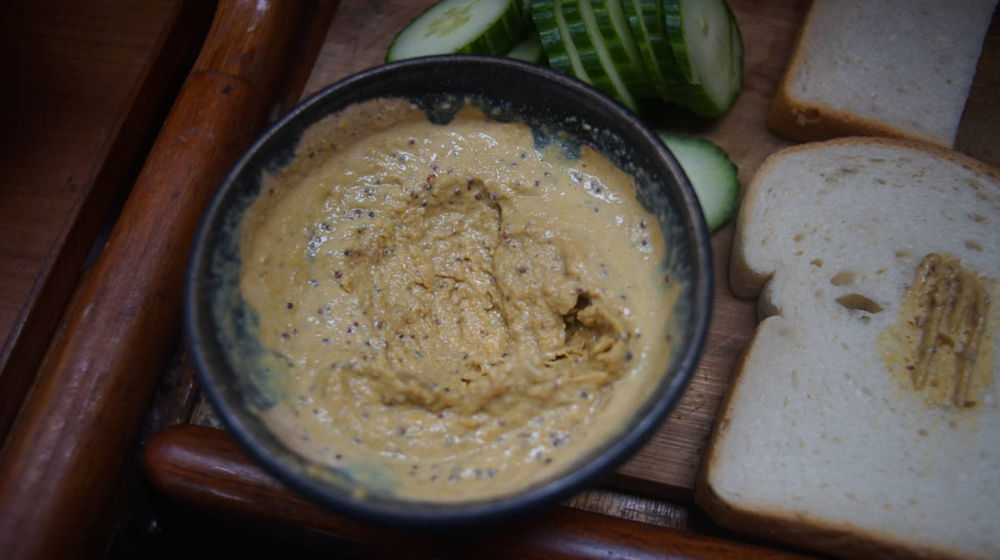
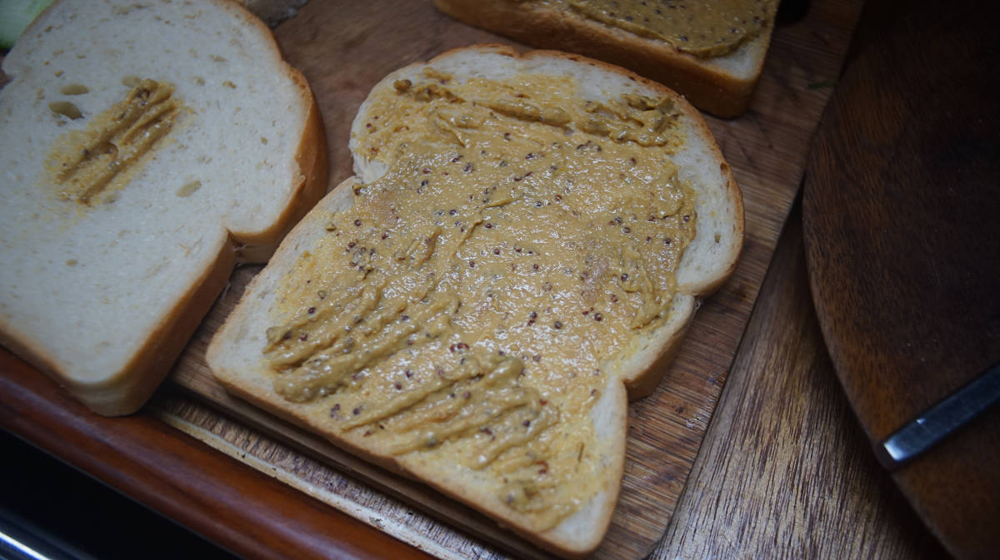

quick grilled cheese
2-3 servings — 10 minutes

There are now many good vegan cheese options to choose from, varying in complexity and cost, but we like to prepare a simple 'cheese-like' mixture when making a grilled-cheese. It takes less than 5 minutes to mix all the ingredients together, requiring no special tools.

The result is a thick, spreadable, and cheese-like mixture.
Substitutions
Plant milk: If you don't like soy milk, any non-dairy milk will do. We'd recommend non-sweetened varieties or the taste may come through too much.
Miso: We always have miso on the boat, and we use whatever kind we happen to have. We've made the mixture with white and red miso. The red miso has a stronger, deeper taste.
Nutritional yeast: It is possible to omit the nutritional yeast, the 'cheese' will taste fine without it because of the presence of the miso, tahini and dijon mustard. If this ingredient is omitted, add less liquid so that the mixture remains thick.

Olive oil: We use olive oil to toast the sandwhiches in a pan, but it is possible to use vegan butter, and to pre-butter the bread prior to putting it in the pan. It is possible to dry-toast the sandwhiches in pan without added oil or vegan butter, but it may take longer to brown.
 nutritional yeast15 g
nutritional yeast15 g garlic powder3 g
garlic powder3 g miso10 g
miso10 g tahini35 g
tahini35 g dijon mustard5 g
dijon mustard5 g soy milk60 ml
soy milk60 ml olive oilto taste
olive oilto taste fresh bread4 slices
fresh bread4 slices
cheese
- In a bowl, add 15 g (1/4 cup) of nutritional yeast, 3 g (1 tsp) of garlic powder, 10 g (1 tsp) of miso, 35 g (2 tbsp) of tahini, 5 g (1 tsp) of dijon mustard (see to make your own mustard). Add 60 ml (1/4 cup) of soy milk(or water) gradually, the mixture should be thick (see photo above), not watery. Mix well, and spread thickly over the bread (we used sourdough bread).
- Layer with extra fillings, if desired. We like to add thin slices of cucumber, and sun-dried tomatoes. Top off with another piece of bread. If there is left-over cheese, spread the rest on the inside of the top bread layer for extra flavor.
- Heat a pan at medium heat, add some olive oil. When the oil is hot, add the first sandwhich and toast until brown on both sides. Serve with a side of pickled vegetables, see our lactofermentation page for ideas.